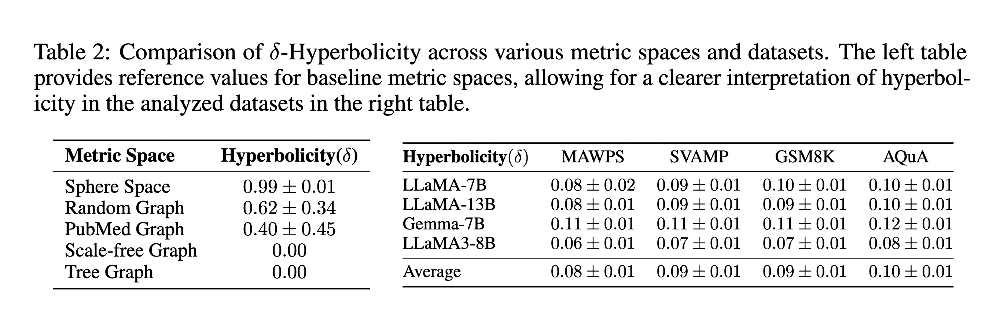
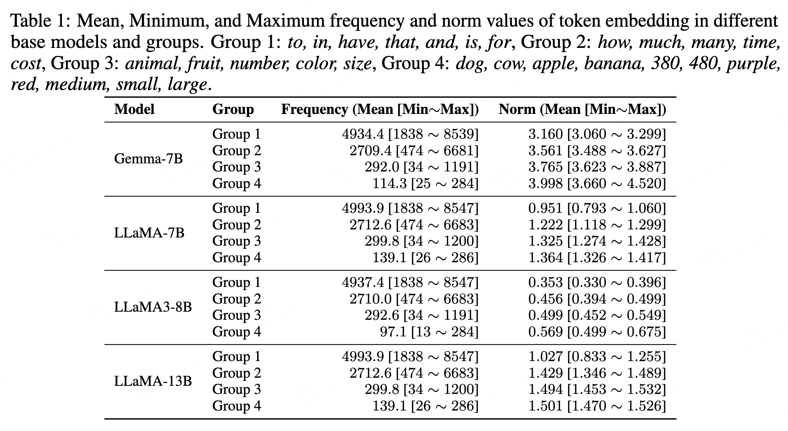

HypLoRA: Hyperbolic Fine Tuning
for Large Language Models
Geometry guided rank reduced adaptation on the hyperbolic manifold
TL;DR We discover that LLM token embeddings have strong hyperbolic structure. Building on this, we propose HypLoRA, a parameter efficient adapter that performs rank reduced adaptation directly on the hyperbolic manifold, consistently improving reasoning performance over standard LoRA.
Most LLM adaptation pipelines operate in Euclidean space by default, yet our empirical analysis reveals a fundamentally different geometric story. We find that token frequencies follow a power law distribution, which is a hallmark of hierarchical data, and that frequent abstract tokens consistently sit closer to the origin while rare specific tokens are positioned farther away. At the prompt level, token spaces exhibit low δ hyperbolicity, indicating an underlying tree shaped organization rather than a flat Euclidean structure.
These observations motivate a natural question: if the geometry of token embeddings is already hierarchical, should adaptation modules explicitly preserve and exploit this structure rather than ignoring it? HypLoRA is our answer to this question.
The two figures below summarize the core empirical signals that motivate manifold based adaptation in HypLoRA.


HypLoRA augments a standard LoRA update with a geometry guided branch designed for hierarchical token structure. The key idea is to keep the base model interface unchanged in Euclidean space while computing an additional rank reduced correction in hyperbolic space, then mapping it back for seamless integration.
Concretely, each adapted layer follows a three step flow: (1) project Euclidean hidden states to the Lorentz manifold, (2) apply a trainable rank reduced transform directly on manifold coordinates (LLR), and (3) map the result back and combine it with the original Euclidean pathway. This yields an adapter that preserves parameter efficiency while better respecting curved geometry during training.
Instead of adapting only in Euclidean space, HypLoRA introduces a hyperbolic branch. Input tokens are projected onto the Lorentz manifold, adapted via a direct rank reduced transform, and projected back:
A naive sequence of repeated log/exp mappings can cancel out geometric effects and collapse toward Euclidean behavior. HypLoRA avoids this by adapting directly on manifold coordinates before projecting back.
Training on Math10K, evaluated on GSM8K, AQuA, MAWPS, and SVAMP.
| Base Model | Method | Params % | MAWPS | SVAMP | GSM8K | AQuA | W.Avg |
|---|---|---|---|---|---|---|---|
| LLaMA3-8B | LoRA | 0.70 | 92.7 | 78.9 | 70.8 | 30.4 | 71.9 |
| HypLoRA | 0.70 | 91.6 | 80.5 | 74.0 | 34.2 | 74.2 | |
| Gemma3-4B | LoRA | 1.04 | 90.8 | 77.3 | 72.3 | 50.8 | 73.7 |
| HypLoRA | 1.04 | 88.2 | 83.9 | 76.1 | 53.2 | 77.8 | |
| Qwen2.5-7B | LoRA | 0.71 | 90.8 | 84.4 | 78.6 | 68.1 | 80.8 |
| HypLoRA | 0.71 | 91.2 | 92.2 | 87.9 | 71.6 | 88.3 |
Training on Commonsense170K, evaluated on 8 benchmarks.
| Base Model | Method | % | BoolQ | PIQA | SIQA | Hella | Wino | ARC-e | ARC-c | OBQA | Avg |
|---|---|---|---|---|---|---|---|---|---|---|---|
| LLaMA3-8B | LoRA | 0.70 | 70.8 | 85.2 | 79.9 | 91.7 | 84.3 | 84.2 | 71.2 | 79.0 | 80.8 |
| HypLoRA | 0.70 | 74.1 | 87.6 | 80.6 | 94.5 | 84.7 | 90.4 | 81.2 | 85.2 | 84.8 | |
| Gemma3-4B | LoRA | 1.04 | 68.1 | 83.2 | 77.2 | 88.9 | 80.5 | 84.5 | 69.9 | 83.6 | 79.5 |
| HypLoRA | 1.04 | 70.0 | 84.3 | 79.2 | 91.5 | 80.3 | 89.1 | 75.9 | 86.4 | 82.5 | |
| Qwen2.5-7B | LoRA | 0.71 | 73.4 | 89.5 | 79.5 | 93.6 | 84.1 | 92.8 | 82.0 | 87.0 | 85.2 |
| HypLoRA | 0.71 | 72.8 | 89.3 | 79.8 | 94.8 | 84.4 | 95.5 | 87.5 | 90.8 | 87.0 |
@inproceedings{yang2025hyplora,
title = {Hyperbolic Fine-Tuning for Large Language Models},
author = {Yang, Menglin and B B, Ram Samarth and Feng, Aosong
and Xiong, Bo and Liu, Jiahong and King, Irwin and Ying, Rex},
booktitle = {Advances in Neural Information Processing Systems (NeurIPS)},
year = {2025}
}
HypLoRA is not just “LoRA in another geometry.” It is a geometry guided adaptation strategy motivated by measurable structure in token embeddings and consistently improving reasoning with practical parameter efficiency.